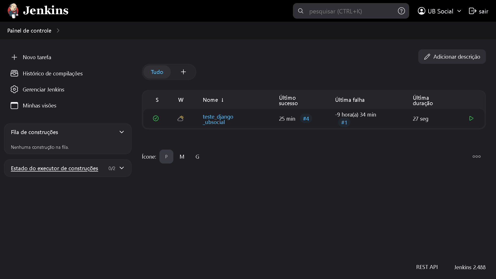

Sistema de automatização de tarefas (build, test e deploy) via Pipelines (similar ao GitHub Actions), utilizado para CI/CD, desenvolvido em Java, com inúmeros plugins e integrações. Criado via arquivo WAR ou executado em webserver. Possui GUI web e via APIs de conexão, além de suporte a arquivo declarativo (Jenkinsfile). Além disso, pode-se gerar relatórios (output) dos passos (jobs) executados, CRON (tasks automatizadas) para criar jobs automatizados via triggers e com timers (independente de pipeline), criar novas máquinas nodes slaves, e configurar instâncias clouds para provisionar agents. Pipeline é trilha ou passo a passo de etapas (stages) de execução de tarefas (steps). Pode ser criada via Jenkinsfile. Na representação GUI dos job do Jenkins, linhas são stages e colunas são pipelines.
Máquinas Master Server, realiza controle de pipelines e agendamento de builds. Máquinas Agents/Minions/Slaves performam os builds. Exemplo, Master realiza pipeline de commit do projeto ao Github, Agent seleciona configurações da pipeline e a executa. Agents podem ser permanentes (servidores dedicados para executar jobs, como Debian GNU/Linux e Windows Server) ou cloud (dinâmicos, sob demanda, como AWS, Docker e Kubernetes). Diretório padrão do Jenkins no GNU/Linux é '/var/lib/jenkins' ou '/var/jenkins_home'.
Instalação do Jenkins via Docker (necessário Docker):
"docker run -u root -d --name jenkins -p 8080:8080 -p 50000:50000 -v "C:\Users\NOME_USUARIO\Desktop\jenkins_home:/var/jenkins_home" jenkins/jenkins"
"docker exec jenkins cat /var/jenkins_home/secrets/initialAdminPassword"Criar job de automatização de projeto Django.
pipeline {
agent any
environment {
PROJECT_NAME = 'music_project'
}
stages {
stage('git_clone') {
steps {
echo 'Clonando repositório'
sh 'git clone https://github.com/mateusschwede/music_django_api_rest.git'
}
}
stage('install_dependencies') {
steps {
echo 'Atualizando repositórios e instalando PIP'
sh '''
apt update
apt install -y python3-pip
pip3 install django djangorestframework --break-system-packages
'''
}
}
stage('access_project') {
steps {
echo 'Acessando projeto Django'
sh '''
cd music_django_api_rest/${PROJECT_NAME}
python3 manage.py makemigrations
python3 manage.py migrate
python3 manage.py runserver &
'''
}
}
stage('access_server') {
steps {
echo 'Acessando servidor'
echo 'Adicionar música'
sh '''
curl -X POST http://localhost:8000/api/musics/ \
-H "Content-Type: application/json" \
-d '{
"title": "Imagine",
"artist": "John Lennon",
"album": "Imagine album",
"release_date": "1971-09-09"
}'
'''
echo 'Visualizar músicas'
sh '''
curl -X GET http://localhost:8000/api/musics/
'''
echo 'Funcionalidades concluídas'
}
}
}
post {
always {
echo 'Pipeline concluído!'
}
}
}
Em breve.
Criar inicialização automatizada de job. Exemplo abaixo, execução de pipeline a cada 5 minutos após construção..
H/1 * * * *